Each point lets you keep one more of that summon.
+1 summon+# to Maximum SummonsApplies to the supported skills below.
28 supported skills
Amazon
Sorceress
Necromancer
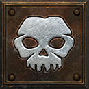
Raise Skeleton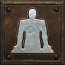
Clay Golem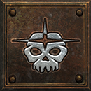
Raise Skeletal Mage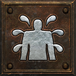
Blood Golem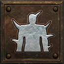
Iron Golem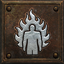
Fire Golem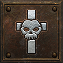
ReviveDruid
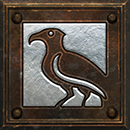
Raven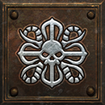
Poison Creeper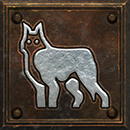
Summon Spirit Wolf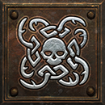
Carrion Vine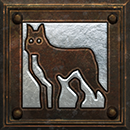
Summon Dire Wolf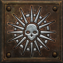
Solar Creeper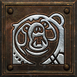
Summon GrizzlyAssassin
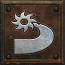
Blade Sentinel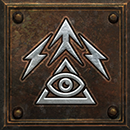
Charged Bolt Sentry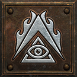
Wake of Fire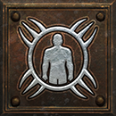
Shadow Warrior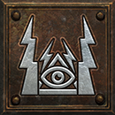
Lightning Sentry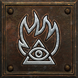
Wake of Inferno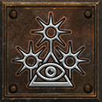
Death Sentry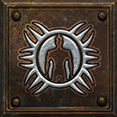
Shadow MasterWarlock
Get this effect
Runewords
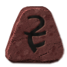
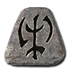
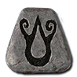
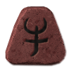
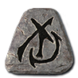
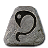
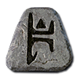
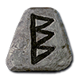
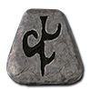
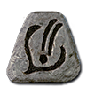
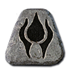
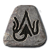
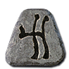
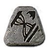
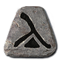
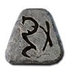
Magic & rare modifiers

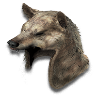
of the Host
Magic & rare suffix
+1 to Maximum Summons- Voodoo Heads
- Wand
- Pelt
- Grimoire
- Orb
- Hand to Hand
- Amazon Item
Equipment
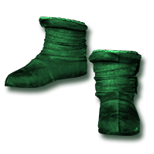
Snarekeeper's Tread
Demonhide Boots
+1 to Maximum SummonsRequired level 90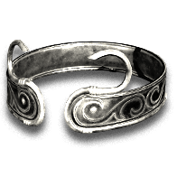
The Unforgotten Sister
Coronet
+1 to Maximum SummonsRequired level 90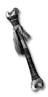
Marrowcall
Tomb Wand
+1 to Maximum SummonsRequired level 46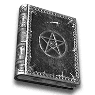
The Engorged Codex
Codex
+2 to Maximum SummonsRequired level 87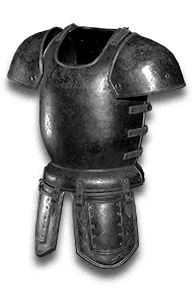
Pack-Mother's Hide
Mage Plate
+2 to Maximum SummonsRequired level 88The Unbound Page
Occult Tome
+1-2 to Maximum SummonsRequired level 85Brood of Embers
Swirling Crystal
+2-3 to Maximum SummonsRequired level 90Oil & gem crafts
Black Oil
+ Perfect Skull
- Pelt / Grimoire / Voodoo Heads / Hand to Hand / Orb / Wand
- +1 to Maximum Summons